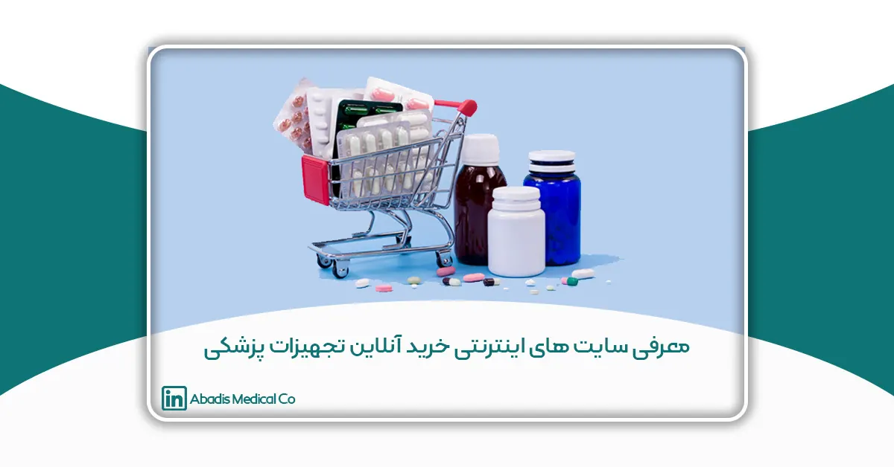

مقدمه
با گسترش فناوری و افزایش دسترسی به اینترنت، روشهای خرید و فروش نیز دستخوش تحولات چشمگیری شدهاند. در این میان، خرید آنلاین به عنوان یکی از مهمترین و پرکاربردترین شیوههای تجاری دنیای امروز شناخته میشود.
با شیوع جهانی ویروس کرونا (کووید-۱۹)، بسیاری از جوانب زندگی روزمره ما را تحت تأثیر قرار گرفت؛ یکی از این تغییرات تغییر در الگوی خرید و مصرف بود. در زمان پاندمی خریدهای اینترنتی به طرز چشمگیری افزایش یافت؛ حتی در حوزههایی که پیش از آن کمتر به صورت آنلاین فعالیت داشتند، همچون تجهیزات پزشکی، رشد چشمگیری مشاهده شد.
سایتهای اینترنتی خرید آنلاین تجهیزات پزشکی، به عنوان پلتفرمهای جدیدی برای تامین نیازهای مردم، بیمارستانها و کلینیکها امکان دسترسی آسانتر و سریعتر به انواع وسایل و تجهیزات پزشکی و دارویی را فراهم کردهاند. این سایتها نه تنها روند خرید را تسهیل کردهاند، بلکه با ارائه اطلاعات جامع و مقایسهای، به خریداران این امکان را میدهند تا بهترین انتخاب را داشته باشند. این مقاله، به معرفی سایتهای اینترنتی خرید آنلاین تجهیزات پزشکی میپردازد.
۱. گروه درمان کالا
گروه درمان کالا در سال ۱۳۹۱ با هدف ارائه یک مرجع قابل اعتماد و تخصصی برای تحلیل و فروش تجهیزات پزشکی و درمانی راهاندازی شد. این مجموعه از زمان تاسیس، تلاش خود را بر ایجاد بستری متمرکز کرده است که کاربران بتوانند با اطمینان و سهولت به تمامی نیازهای پزشکی و درمانی خود دسترسی پیدا کنند. اولویت اصلی درمان کالا، تامین سریع و مقرون به صرفه محصولات با بالاترین سطح کیفیت و خدمات است. برای کاربرانی که ترجیح میدهند از طریق تلفن سفارش خود را ثبت کنند، سیستم سفارشگیری تلفنی نیز در کنار پرتال الکترونیکی راهاندازی شده است تا فرآیند خرید برای همه کاربران به بهترین شکل ممکن انجام شود.
محصولات ارائهشده در درمان کالا به چهار دسته اصلی شامل پزشکی حرفه ای، مصرف خانگی، کالاهای مصرفی و بهداشتی تقسیمبندی شدهاند. درمان کالا دارای تمامی مجوزهای معتبر در این حوزه است.
هدف نهایی گروه درمان کالا این است که با ارائه خدمات با کیفیت، گامی مؤثر در خدمترسانی به جامعه بردارد و به عنوان مرجعی معتبر در زمینه تجهیزات پزشکی شناخته شود.
از مزایای این سایت میتوان به موارد زیر اشاره نمود: ۱. قدام به واردات، توزیع، عرضه، فروش و خدمات پس از فروش کالاهای پزشکی ۲. ثبت شده در اداره کل تجهیزات پزشکی ۳. ضمانت تعویض کالای خریداری شده ۴. دارای انباری با بیش از ۱۲۰۰۰ قلم محصول ۵. ارسال سریع ۶. قیمتهای مناسب و واقعی ۷. امکان خرید اقساطی ۸. وضعیت سئو مطلوب و رسیدن مشتریان از طریق جستجو در گوگل
۲. شرکت سلامت عنصر جاوید (هلثیوم)
شرکت سلامت عنصر جاوید (هلثیوم) با هدف ارائه خدمات به گروههای مختلف مصرفکنندگان در زمینه تأمین لوازم و تجهیزات پزشکی، فعالیت خود را در سال ۱۳۹۶ آغاز کرده است. این شرکت بهمنظور پاسخگویی به نیازهای متنوع مراکز درمانی، بیمارستانها، درمانگاهها، داروخانهها، کلینیکهای تخصصی و حتی مصرفکنندگان نهایی، وارد عرصه اقتصادی شده است. هلثیوم با تمرکز بر افزایش آگاهی مردم در مورد تجهیزات پزشکی، کاهش هزینههای درمان و تسهیل فرآیند خرید این اقلام، فعالیت خود را ادامه داده است. هدف اصلی این سایت جامعه سالم، درمان بیدغدغه و ارتقاء سطح سلامت جامعه است.
هلثیوم با رویکردی نوآورانه و بهرهگیری از تمامی امکانات موجود، تلاش میکند تا با حذف واسطهها، تجهیزات پزشکی را با بهترین قیمت و در سریعترین زمان ممکن به دست مشتریان خود برساند. این سایت تمامی مجوزهای لازم برای فعالیتهای این شرکت از جمله عضویت در اتحادیه کشوری کسب و کارهای مجازی، مجوز اداره کل تجهیزات پزشکی (IMED)، نماد اعتماد الکترونیکی (Enamad)، مجوز نماد رسانه، عضویت در انجمن صنفی فروشگاههای اینترنتی شهر تهران و گواهی شرکت خلاق از معاونت علمی و فناوری ریاست جمهوری را دارد.
مزایای اصلی هلثیوم : ۱. امکان بازگشت کالا تا ۷ روز ۲. پرداخت آنلاین یا حضوری ۳. ارسال رایگان در شهر تهران برای سفارشات بالای ۴۵۰ هزار تومان ۴. ارسال به موقع سفارشات
۳. شرکت تجهیزات پزشکی کیاطب غرب (IMEDS.IR)
شرکت تجهیزات پزشکی کیاطب غرب از سال ۱۳۸۲ فعالیت خود را در زمینه ارائه محصولات پزشکی با کیفیت و کارایی بالا به بیمارستانها، مراکز درمانی، داروخانهها و بیماران آغاز کرده است. این شرکت، تجهیزات پزشکی پرمصرف و کمیاب را در بسته بندی محصولات خود قرار داده است. در این سایت امکان جستجو محصولات در میان بیش از ۱۰،۰۰۰ محصول وجود دارد که اطلاعات و مشخصات محصولات درج شده است؛ بنابراین به مشتریان خود این امکان را میدهد که بتوانند با آگاهی برای خرید خود تصمیم بگیرند. در سایت imeds ثبت سارش به صورت عمده نیز انجام میشود. ارسال رایگان، پشتیبانی ۲۴ ساعته، ارسال سریع، پیگیری دقیق و لحظه به لحظه سفارشات و ضمانت بازگشت کالا از مزیتهای این سایت میباشد.
۴. سایت تجهیزات پزشکی توانی نو
سایت تجهیزات پزشکی توانی نو به عنوان یک پلتفرم مطمئن و سریع برای خرید انواع تجهیزات پزشکی و بهداشتی با قیمتهای رقابتی، در سال ۱۳۹۷ شروع به فعالیت کرد. هدف این سایت رساندن کالاهای پزشکی با کیفیت و دارای گارانتی را با حداقل سود به دست مصرفکنندگان اصلی است. توانی نو علاوه بر فروش به مصرفکنندگان نهایی، به عنوان یک تامینکننده در بخش همکار به همکار (B2B) نیز فعالیت میکند. اصالت، کیفیت، کارایی، بهترین قیمت مزیت اصلی توانی نو است. این سایت دارای تمامی مجوزهای لازم از مراجع معتبر است.
این سایت امکان دسترسی به اطلاعات و راهنماییهای دقیق از کارشناسان مجرب را بدون نیاز به مراجعه حضوری فراهم کرده و به شما این امکان را میدهد تا با اطمینان خرید کنید و در زمان خود صرفهجویی کنید.
۵. فروشگاه اینترنتی اول طب
فروشگاه اینترنتی اول طب با دریافت نمایندگی از بزرگترین شرکتهای تولیدی، واردات و توزیع تجهیزات پزشکی، توانسته است تا شرایطی را فراهم آورد که مشتریان عزیز در تهران و سراسر کشور بتوانند انواع کالاهای پزشکی را به صورت عمده و تکی با قیمتی مناسب را به صورت آنلاین خریداری کنند. این فروشگاه با ارائه بررسیهای تخصصی در مورد هر محصول، امکان یک خرید مطمئن و آسان را برای مشتریان خود فراهم کرده است. در اول طب محصولات لوازم پزشکی، تجهیزات پزشکی، تجهیزات ارتوپدی و محصولات آرایشی بهداشتی قابل سفارش است.
از جمله مزایای مهم فروشگاه اینترنتی اول طب میتوان به موارد زیر اشاره کرد:
- ارائه مجموعهای کامل و متنوع از تجهیزات پزشکی
- شفافیت و بهروزرسانی مستمر قیمتهای لوازم پزشکی
- امکان خرید تکی و عمده با قیمتهای مناسب
- ارائه مشاوره رایگان برای خرید تجهیزات پزشکی
- تضمین ۱۰۰ درصدی اصالت محصولات
- تحویل سریع سفارشات در تهران با استفاده از ناوگان اختصاصی
- امکان پرداخت در محل برای مشتریان ساکن تهران
۶. مدینیوم
مدینیوم به عنوان یک پلتفرم تخصصی، خرید و فروش تجهیزات و لوازم پزشکی نو و دست دوم را در فضایی امن فراهم کرده است. در این بستر گروههای هدف میتوانند به راحتی به خرید، فروش یا اجاره کالاهای پزشکی دست دوم خود بپردازید و همچنین از خدمات پزشکی موجود بهرهمند شوید. در مدینیوم، امکاناتی برای کاربران در نظر گرفته شده است که به آنها اجازه میدهد با اطمینان محصولات خود را معامله کنند. ثبت آگهیها در این سایت به صورت کاملاً رایگان انجام میشود. مدینیوم به عنوان واسطه در معاملات این سایت دخالتی ندارد و کاربران مستقیماً با یکدیگر در ارتباط هستند.
مزایای مدینیوم: ۱. قیمت منصفانه ۲. تنوع محصولات ۳. آگهیهای برگزیده ۴. پشتیبانی پس از فروش
۷. فروشگاه تجهیزات پزشکی آریا مدیک
فروشگاه تجهیزات پزشکی آریا مدیک، در زمینه خردهفروشی و عمدهفروشی تجهیزات پزشکی فعالیت خود را از سال ۱۳۹۳ آغاز نموده است. هدف اصلی آریا مدیک ارائه تجهیزات پزشکی با قیمتهای مناسب و ضمانتنامه معتبر است. آریا مدیک محصولات متنوعی در حوزههای مختلف مانند تجهیزات پزشکی عمومی و خانگی، تجهیزات بیمارستانی، دندانپزشکی، آزمایشگاهی، بیمارستانی و زیبایی را در فروشگاه خود ارائه میدهد. اهداف اصلی آریا مدیک عبارتند از:
- افزایش آگاهی عمومی از طریق مقالات تخصصی موجود در سایت
- شناسایی نیازهای مصرفکننده و ارائه بهترین محصولات
- حذف واسطهها و افراد غیرمتخصص از زنجیره فروش
- ارائه آموزشهای جامع در زمینه استفاده از تجهیزات پزشکی
- ایجاد بستری برای مشاوره و تبادل تجربیات بین مصرفکنندگان و کارشناسان
- معرفی محصولات برندهای معتبر، با اصالت و همراه با گارانتی و خدمات پس از فروش
- ارائه مشاوره تخصصی و رفع مشکلات کاربران در سریعترین زمان ممکن
۸. فروشگاه تجهیزات پزشکی طب پایتخت
فروشگاه تجهیزات پزشکی طب پایتخت سال ۱۴۰۰ با ارائه بیش از ۳۰۰۰ محصول بهروز و با کیفیت از معتبرترین تولیدکنندگان بینالمللی تاسیس شد؛ و یک مرجع اینترنتی برای تامین تجهیزات تخصصی و مصرفی پزشکی در کشور است. در این فروشگاه محصولات در دسته بندی تجهیزات خانگی، تجهیزات بیمارستانی و مصرفی پزشکی قابل سفارش بوده و با استفاده از روشهای نوین در عرضه ملزومات پزشکی از برترین برندهای جهانی، شرایطی را فراهم کرده است تا مشتریان بتوانند با آگاهی کامل و بررسی جزئیاتی مانند رنگ، جنس، ابعاد دقیق و تصاویر محصول، بهترین انتخاب را برای خرید داشته باشند. از مزیای اصلی این فروشگاه ارسال سریع، پیگیری سفارشات، گارانتی محصولات و دارای مجوزهای معتبر و لازم است.
۹. فروشگاه اینترنتی زیمانو
فروشگاه اینترنتی زیمانو با تکیه بر تجربه و تخصص مدیران و متخصصین خود در حوزه بهداشت و سلامت، در زمان شیوع ویروس کرونا فعالیت خود را آغاز کرد تا تا بهترین و باکیفیتترین کالاهای مورد نیاز پزشکان، کادر درمان، درمانگاهها و مردم را در سریعترین زمان ممکن و با مناسبترین قیمت فراهم کند. هدف این مجموعه، بهبود کیفیت زندگی و سلامت افراد است.
خدمات و ویژگیهای زیمانو:
- معرفی و عرضه محصولات در حوزه سلامت، پزشکی و بهداشت
- شناسایی و پیشنهاد محصولات با عملکرد بالا، کیفیت عالی و ویژگیهای متمایز
- ارائه مشاوره در انتخاب تجهیزات و محصولات مناسب
۱۰. فروشگاه اینترنتی آزطب
فروشگاه اینترنتی آزطب بهعنوان یکی از مراجع تخصصی در زمینه فروش تجهیزات پزشکی و صنعت سلامت شناخته میشود. این فروشگاه با هدف ارتقای رفاه جامعه، از جمله پزشکان، محققان حوزه سلامت، و مراکز درمانی و دانشگاهی، خدمات نوین و مناسبی را از طریق بستر اینترنتی ارائه میدهد. آزطب بهطور ویژه به نقد و بررسی و فروش آنلاین لوازم پزشکی میپردازد. در این فروشگاه، دستهبندیهای متنوعی از تجهیزات، شامل لوازم پزشکی آزمایشگاهی، ورزشی، خانگی قابل سفارش است.
۱۱. فروشگاه اینترنتی طب تولید
فروشگاه اینترنتی طب تولید با هدف ارائه تجهیزات و کالاهای پزشکی با کیفیت، بستری آنلاین را فراهم کرده است تا مشتریان بتوانند به راحتی محصولات مورد نیاز خود را پیدا کنند. این سایت یک مرجع آنلاین برای دسترسی و خرید تجهیزات پزشکی میباشد. از مزایا اصلی طب تولید میتوان به موارد زیر اشاره نمود:
- ارسال به سراسر کشور
- ارسال سریع
- ارائه محصولات با کیفیت
- پشتیبانی و خدمات پس از فروش
۱۲. فروشگاه اینترنتی سدان مد
فروشگاه اینترنتی سدان مد به عنوان یکی از پیشگامان در حوزه فروش آنلاین تجهیزات پزشکی و بهداشتی در ایران، با هدف فراهم کردن دسترسی آسان و مطمئن به کالاهای پزشکی، شروع به فعالیت کرده است.
این فروشگاه با ارائه مجموعهای جامع از تجهیزات شامل لوازم مصرفی پزشکی، دستگاههای پیشرفته، تجهیزات امداد و نجات، و دیگر اقلام مورد نیاز در این حوزه، به یکی از مراجع اصلی خرید این محصولات تبدیل شده است.
سدان مد با بهرهگیری از تجربه و تخصص چندین ساله در بازار تجهیزات پزشکی، توانسته است تنوع بینظیری از برندهای معتبر را به مشتریان ارائه دهد. این فروشگاه اینترنتی با ارائه اطلاعات دقیق و جامع در مورد هر محصول، امکان انتخاب آگاهانه و خرید مطمئن را برای پزشکان، مراکز درمانی، و عموم مردم فراهم میآورد.
مزایای اصلی سدان مد، ارائه خدمات با بالاترین کیفیت، قیمتهای رقابتی، تضمین اصالت کالا، قیمتگذاری منصفانه، و ارائه خدمات پس از فروش است.
۱۳. فروشگاه اینترنتی تجهیزات پزشکی و بیمارستانی می مد
فروشگاه اینترنتی میمد با بیش از ۱۸۰۰۰ قلم کالا و بازدید روزانه ۹۰۰۰ کاربر، بهعنوان یک مرجع معتبر در حوزه فروش تجهیزات پزشکی و بیمارستانی بستری را برای دسترسی به تجهیزات پزشکی و بیمارستانی با کیفیت برای مشتریان این صنعت فراهم کرده است. این فروشگاه با هدف فراهم کردن دسترسی آسان به محصولات پزشکی باکیفیت، همکاری گستردهای با تولیدکنندگان و واردکنندگان معتبر دارد و انواع تجهیزات و ابزارهای پزشکی را بدون واسطه و با قیمتی مناسب در اختیار مشتریان قرار میدهد و به بازار عرضه میکند.
تمامی کالاهای عرضه شده در میمد دارای تأییدیه اداره کل تجهیزات پزشکی ایران هستند، بنابراین خریداران میتوانند با اطمینان از کیفیت و اصالت محصولات، خرید خود را انجام دهند.
در میمد، مشتریان میتوانند طیف وسیعی از تجهیزات از جمله تجهیزات اتاق عمل، ابزارهای جراحی، دستگاههای استریلیزاسیون و لندری بیمارستانی، تجهیزات آزمایشگاهی، هتلینگ بیمارستانی، تجهیزات پزشکی عمومی و خانگی، و همچنین دستگاهها و تجهیزات تصویربرداری پزشکی را پیدا کنند. علاوه بر این، محصولات تخصصی برای فیزیوتراپی، توانبخشی، کاردرمانی، و تجهیزات مخصوص زنان و زایمان نیز در این فروشگاه موجود است. مشتریان با مراجعه به میمد، میتوانند به راحتی کالاهای مورد نیاز خود را مشاهده کرده و اطلاعات کامل از جمله قیمت، توضیحات فنی، کشور تولیدکننده، و رزومه برند مورد نظر را دریافت کنند. همچنین با مشاهده تصاویر و ویدیوهای مرتبط با محصولات، امکان مقایسه و انتخاب بهترین گزینهها را در یک بازار رقابتی دارند.
مزایای خرید از میمد می توان به مواردی از جمله موارد زیر اشاره کرد: ضمانت کیفیت، اصالت کالا، دسترسی آسان به محصولات متنوع پزشکی، قیمتهای مناسب و مقرونبهصرفه، ارسال سریع و مطمئن، و پشتیبانی و مشاوره تخصصی.
۱۴. گروه مدی لایف
گروه مدی لایف با تیمی مجرب در حوزه تولید، فروش، و ارائه خدمات پزشکی فعالیت میکند. هدف اصلی این مجموعه، ارائه خدمات بهداشتی حرفهای و عرضه محصولات پزشکی با کیفیتی مطابق با استانداردهای جهانی است. ارائه مشاوره رایگان برای انتخاب بهترین محصول، پشتیبانی آنلاین ۲۴ ساعته، قیمتهای شرکتی، سرویس رایگان و خدمات پس از فروش از جمله مزایای این فروشگاه است.
۱۵. سایت تجهیزات پزشکی مدکالا
سایت تجهیزات پزشکی مدکالا یک فروشگاه اینترنتی مطمئن و کارآمد برای خرید تجهیزات پزشکی با قیمت مناسب است. این فروشگاه در سال ۹۷ با نام پیشگامان طب اقاقیا آغاز به کار نمود. از ابتدای راهاندازی این سایت، هدف اصلی گروه مدکالا ارائه محصولاتی با کیفیت بالا و گارانتی معتبر بوده است، همزمان با حفظ حقوق مشتریان که از اصول اساسی شرکت به شمار میآید. این شرکت با سود حداقلی، تلاش میکند تا محصولات را به دست مصرفکنندگان واقعی برساند.
سیاست قیمتگذاری در مدکالا بر اساس اصول مشتریمداری و احترام به حقوق مصرفکنندگان تعیین شده است. قیمتهای ارائه شده در این سایت غالباً همان قیمتهای مصوب تولیدکنندگان و تأمینکنندگان اصلی است، بنابراین مشتریان میتوانند از مناسب بودن قیمتها اطمینان حاصل کنند.
جمع بندی
با توجه به اهمیت روزافزون دسترسی آسان و سریع به تجهیزات پزشکی، به ویژه در دوران پساکرونا، خرید آنلاین تجهیزات پزشکی و درمانی به یکی از ضرورتهای اصلی تبدیل شده است. سایتهای معرفیشده در این مقاله، با ارائه خدمات متنوع و باکیفیت، توانستهاند نقشی کلیدی در رفع نیازهای گوناگون جامعه ایفا کنند. این وبسایتها با بهرهگیری از فناوریهای پیشرفته، ارائه اطلاعات جامع، و تضمین کیفیت محصولات، فرآیند خرید را برای مشتریان به تجربهای راحت و مطمئن تبدیل کردهاند. توجه به مزایا، خدمات پس از فروش، قیمتگذاری منصفانه، و سرعت ارسال میتواند به خریداران کمک کند تا بهترین انتخاب را داشته باشند و از کیفیت محصولات اطمینان حاصل کنند. در نهایت، سایتهای خرید آنلاین تجهیزات پزشکی، نه تنها نیازهای ضروری را پاسخ میدهند، بلکه به بهبود و ارتقای سلامت جامعه نیز کمک شایانی میکنند.